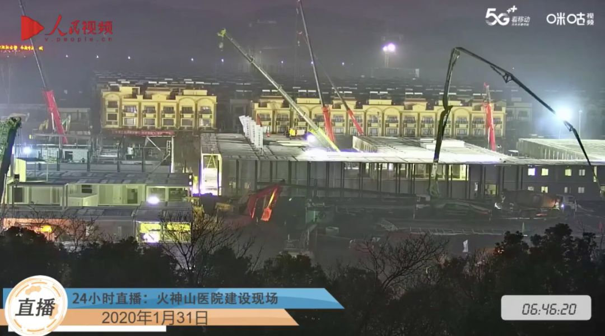
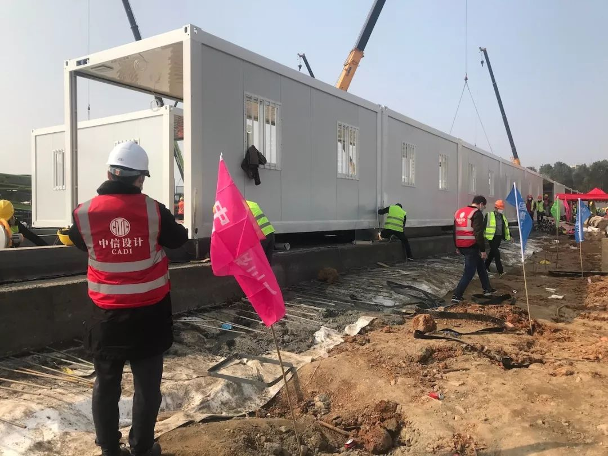
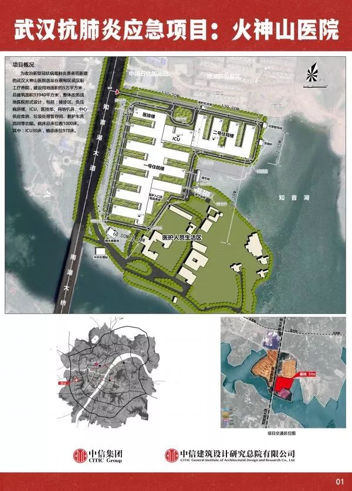

火神山“三千勇士” |武汉肺炎亲历-中经实时报-中国经营网
原文链接 备份链接 火神山“三千勇士” |武汉肺炎亲历 2020-01-28 08:20 作者：王迎春 来源：中国经营网 本报记者 王迎春 武汉报道 1月27日，武汉市蔡甸区知音湖畔，占地5万平方米的滩涂草坡地完全变了模样，工人们正在操作 …
1月31日早晨6点多，打开武汉火神山医院建设现场24小时直播画面，可以看到天还没亮，但工地灯火通明，画面近端的挖掘机和工程车辆一直处于工作状态，病房已经初具雏形，不断有施工人员穿梭于病房之间。

△ 直播画面截图
而在7天之前，这里还是一片空地。
△ 1月24日的医院施工现场 （新华社记者 肖艺九摄）
2020年1月23日下午，武汉市城建局紧急开会，要求参照2003年抗击“非典”期间北京小汤山医院模式（4000工人用7个昼夜火速建成），在武汉职工疗养院建设一座专门医院——武汉蔡甸火神山医院，来应对严峻的新型冠状病毒肺炎疫情。
在1月23日，新冠病毒疫情已经波及全国25个省（区、市），截至当天0点，25省区累计报道确诊病例571例，其中300多例来自疫情首发地和重灾区武汉。截至1月31日0点，湖北省累计报告新冠病毒肺炎病例5806例，其中武汉市2639例，对于当地现有医疗资源，压力可想而知。
根据建设要求，武汉蔡甸火神山医院24日完成相关设计方案， 2月3日前建成投入使用，规划建筑面积2.5万平方米，可容纳1000张病床。1月25日，武汉市又决定再建一所“小汤山模式”医院——雷神山医院，目前规划面积约6万平方米，床位1600张。
火神山、雷神山两所医院开建以来，一直处于公众的注目之下。视频直播平台开设了24小时不间断网络直播。春节期间，因为新冠疫情而不能出门的数千万网友，便在可以俯瞰工地全景的直播画面前，做起了两所医院的“网络监工”。
1月30日，承担火神山医院设计任务的中信建筑设计研究总院建筑师田怡，来到施工现场查看工程进度，并拍下了本文开头的这段视频。通过视频，可以从内部看到火神山医院截至当天的建设进展。

△ 中信建筑设计研究总院 供图
为了获得医院工程的更多情况，八点健闻当晚对中信建筑设计研究总院有限公司副总建筑师、火神山设计总负责人汤群，建筑专业负责人之一田怡进行了采访。
八点健闻：是在怎样的情况下接到这个任务的？有多少人参与？
汤群：1月23日下午，中信建筑设计研究总院接到武汉火神山医院的紧急设计任务，迅速集中总院具有医疗设计经验的工程师，组建起60余人的火神山应急项目组，当晚18:00即投入设计工作。5小时内拿出了场地平整设计图，24小时拿出了方案设计图并得到通过，60小时即1月26日凌晨交付了施工图。而施工团队在拿到场地平整设计图之前，已经开始连夜平地，这也是网友们看到的一百多辆施工车同时作业、平整地面的场景。

△ 中信建筑设计研究总院 供图
八点健闻：你们以往有医院设计方面的经验吗？雷神山医院设计情况您了解吗？
汤群：武汉的设计院很多，但是专业设计过医院的不多。我们曾设计过武汉市金银潭医院（收治新型冠状病毒感染的肺炎定点医院），具有丰富的传染病医院设计经验。除了金银潭医院以外，在国内外设计了数十个综合医院项目，如武汉市协和医院金银湖院区、武汉市第一医院、武汉市儿童医院、武汉市中医院、武大中南医院、西安市儿童医院、援尼日尔综合医院等等。设计雷神山的，也是一家很有经验的设计院。
八点健闻：能按预定时间完工吗？
汤群：我们在1月26日凌晨交付图纸以后，这几天的主要任务都是配合现场施工，根据工地的实际进展状况加上这几天武汉的天气比较好，估计应该在市政府预定的2月3日左右交付给使用单位。
八点健闻：火神山医院和一般综合医院相比有什么不同？保障呼吸道传染疾病交叉感染的重点是什么？
汤群：防护隔离的级别不仅比综合医院，而且比现有的传染病医院要求还要高。通过设置清洁区、半污染区、污染区及医护人员专用通道和病人通道的布置方式，以及相对应的零压清洁空间到负压病房的通风系统，避免交叉感染。医护人员进出病区设置包括风淋在内的专用卫生通过设施，最大限度地保护医护人员的健康安全。
每个病房均设有独立的卫生间，利用集装箱下面的架空空间组织排水管道，且每个病房均设有专用隔离防护窗，用于药品和食品的传递。

△ 中信建筑设计研究总院 供图
八点健闻：在视频中看到田怡建筑师好像特别关注层高的问题，为什么？
田怡：是的。这是第一次用集装箱房来建设医院。集装箱是现成的，外形高度固定是3米，而通常医院设计层高在3.8米左右,铺设管线后净高可以达到2.8米。我们非常担心病房层高是否足够，因为太低病患会很容易觉得压抑。而今天（1月30日）到现场亲自感受，安装了风管后的走廊层高达到2.4米。病房内管线较少，层高会更高一些，使用感受也会更好一些。所以我说还是OK的。

△ 中信建筑设计研究总院 供图
八点健闻：有哪些避免环境污染的措施？
汤群：我们采取了雨水全收集消毒处理和全基地铺设防渗膜的技术措施。5万平方米的建设用地采用防渗膜全覆盖，污水接触消毒4小时后排入城市管网，场地雨水则通过专门系统全面收集，消毒半小时后排入城市管网，医疗垃圾按照环保部门的相关规定进行专门处置。
八点健闻：医院设计得到了小汤山设计团队的哪些帮助？
汤群：小汤山设计团队——中国中元国际工程有限公司在接到有关需求后第一时间将优化的项目图纸和说明文件发送给武汉市城建局并转交我院，当晚即成立以黄锡璆大师为组长的技术专家组，连夜联系我院建立在线沟通机制，为火神山医院设计工作提供24小时技术支持，为医院设计建设工作的顺利进行发挥了极为重要的作用。
八点健闻：17年后建设火神山医院，有哪些条件比小汤山更好？有什么经验借鉴？
田怡：小汤山医院的大病区是分开独立的，要从一个区到另一个区只能从户外穿行。且病人通道都直接对外，没有封闭。火神山医院则根据小汤山医院和武汉医疗专家组的意见，将医护流线和病人流线都在室内，同时又分别隔离。医护人员通过建筑中的医护清洁走道可以到达每一个病区，不需要达到室外，更有效地保护了医护人员的安全。而且火神山的病房使用了17年前还没有的集装箱房。
八点健闻：是否知道网络上有几千万人在线“监工”？怎么看待这种热情？
田怡：1月27日以前，设计团队的所有精力都集中在尽快地完成和优化图纸，为现场施工争取更多的时间上，关于现场的事情，我们都放心地交给了我院24小时在现场配合的团队手上。但是当我们把完善的图纸交到施工方手中后，我们都关注到此事，而且也会利用工作休息的时间看一下在线视频，了解一下现场的状况，看是不是能如期完成并投入使用。让我们欣喜的是，工地现场有很多人在没日没夜的干，现场的视频不是每天有多少变化，而是上午和下午就会有很大的不同。我们相信很多网友也跟我们有着一样的心情，而且几千万的“云监工”也表明中国人都站在一起，和武汉站在一起！
八点健闻：你们专业的监工的心情如何？是在盯哪些重点？
**田怡：**我们更多关心的是这么短的时间，我们设计要求的建材是否能够采购得到？如果采购不到，能否有其它的替代方案？我们的设计是否能兼顾到短施工周期的需求？
八点健闻：视频中看到现场工人都戴口罩了，还带了馒头干粮。不知道现场防控和后勤供给怎么样？
田怡：这部分主要由指挥部统一负责。我今天去之前也很担心现场防控。到了看到有体温筛查，所有人都带上了口罩。后勤上因为旁边有个疗养院，可以供应三餐，虽然现在武汉的情况不能保证工人们吃得很好。我拍摄到他们带馒头后也专门问了一下，是有时饭点怕拖延工作，就没去打饭，带的补给。
莫杨|撰稿
刘冉|责编


我们尊重原创版权，未经允许请勿转载。
授权转载
郑琪 微信号: 1281949389
商务合作
上海：leslee 13916263824
北京：Jessie 13911125922
线索爆料、意见反馈，加入核心读者社群
请扫码联系健闻君

让朋友们看到你也在看
↓↓↓
原文链接 备份链接 火神山“三千勇士” |武汉肺炎亲历 2020-01-28 08:20 作者：王迎春 来源：中国经营网 本报记者 王迎春 武汉报道 1月27日，武汉市蔡甸区知音湖畔，占地5万平方米的滩涂草坡地完全变了模样，工人们正在操作 …
原文链接 备份链接 腾讯新闻《潜望》作者 郭晓峰 新型肺炎疫情，牵动万众。日前，三大电信运营商启动了应急通信保障工作，全力保障通信畅通，保障重点区域、隔离医院等移动通信网络畅通。 与此同时，重灾区武汉，5G网络的建设与疫情争分夺秒。1 …
原文链接 备份链接 1月25日，是中国鼠年的第一天，也是武汉封城的第3天。非常时期，武汉成了全国人民挂念、祈福的城市。封城后，武汉人民的真实生活是什么样？正和岛自今日起特别推出《叶青：我在武汉疫区的第N天》专栏。叶青是一位定居武汉40年的 …
原文链接 备份链接 ********** *****黄锡璆表示，现在的技术条件比建设小汤山医院时好多了，他希望火神山医院的建设能够实现更好的使用效果。***** 火神山医院施工现场。受访者供图 文 | 新京报记者 韩沁珂 编辑｜王婧祎 校 …
原文链接 备份链接 隔离病房中的除夕丨对话武汉肺炎病人 2020-01-24 22:06 作者：陈婷 曹学平 来源：中国经营网 本报记者 陈婷 曹学平 广州报道 1月24日，正值除夕。 在这个本该全家团圆吃年夜饭的日子，对于正在武汉市金银 …